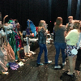

Kiwanis Club Bradford Chapter
Local Time:
Clock
Home
Membership
Kiwanis Projects
Kiwanis Family
Committees
Contact Us
Welcome to the Kiwanis Club of Bradford, Pennsylvania Website!

Why be a part of Kiwanis?